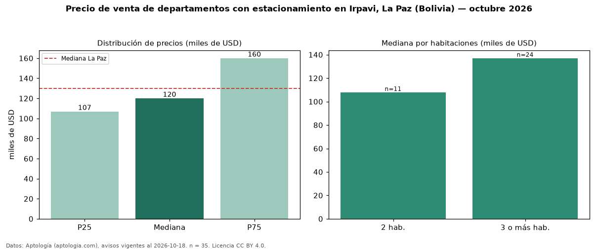

Precio de venta de departamentos con estacionamiento en Irpavi, La Paz (Bolivia) — octubre 2026
USD 120.000 es el precio mediano de departamentos con estacionamiento en venta en Irpavi, La Paz (Bolivia) (n = 35 avisos). Frente a la mediana de todos los departamentos en venta de Irpavi (USD 110.500, n = 47), queda 9 % por encima; este segmento reúne el 74 % de esos avisos. Por metro cuadrado, la mediana es USD 990/m² (n = 35), 1 % por encima del conjunto de referencia (USD 981/m²). El área mediana anunciada es 144 m². El segmento con más oferta es el de 3 o más habitaciones (24 avisos, mediana USD 137.000); pasar de 2 habitaciones a 3 o más habitaciones cambia la mediana +27 %. La cuota de mantenimiento o condominio mediana declarada es USD 50,00 al mes (n = 23). La mediana de todos los departamentos en venta de La Paz es USD 130.000 (−8 % de diferencia). La mitad central de los avisos va de USD 106.900 a USD 160.000 (razón 1,5), una dispersión moderada. Datos: Aptología (aptologia.com), CC BY 4.0 — https://www.aptologia.com/bo/venta/la-paz/irpavi. Archivos: PDF, CSV con las cifras y gráfica PNG.

| Avisos únicos | 35 |
|---|---|
| Percentil 25 | COP 106.900 |
| Mediana | COP 120.000 |
| Percentil 75 | COP 160.000 |
| Mediana por m² | COP 989 |
Fuente: avisos vigentes de portales inmobiliarios recopilados por Aptología, deduplicados (mínimo 30 avisos únicos por celda). Precios pedidos, no cerrados. Fecha: 2026-10-18.